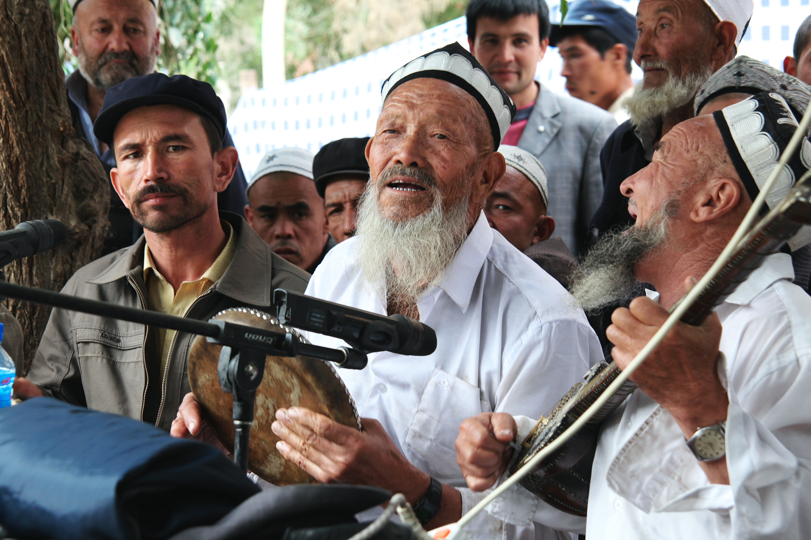

Uyghurs in Uzbekistan: migration from East Turkestan and the formation of the community
The Uyghurs are a Turkic people close to Uzbeks in language and culture, historically tied to East Turkestan (present-day northwestern China — Xinjiang). The Uyghur community in Uzbekistan took shape through centuries of Silk Road trade, migration from Kashgar and movements in the Soviet period. A notable fact: the ethnonym 'Uyghur' was adopted in its modern sense in Tashkent in 1921. History, facts only; population figures are estimates.

One of the ethnic communities living in Uzbekistan is the Uyghurs — a Turkic people historically tied to East Turkestan (today the Xinjiang region of China). The following sets out, facts only, who the Uyghurs are, how they came to and formed a community on the territory of Uzbekistan, and the community's cultural life. Present-day politics in Xinjiang is kept outside the scope of this historical article.
Who the Uyghurs are
The Uyghurs are a Turkic people, mostly Sunni Muslim, historically the settled town and oasis dwellers of the Tarim Basin (East Turkestan). Their language belongs to the Karluk Turkic group and is very close to Uzbek, which is in the same group; academic sources describe the Uyghurs as closer to the Uzbeks than to the Kazakhs in language and culture.
The name 'Uyghur' was adopted in Tashkent (1921)
The modern ethnonym 'Uyghur' was adopted in the 20th century: until 1921 the people of the Tarim Basin referred to themselves by local terms (yerlik 'locals,' 'Muslim people,' or by oasis names such as Kashgarlik or Yarkandlik). At a conference held in 1921 in Tashkent, then under Soviet authority, Turkic intellectuals adopted 'Uyghur' as the people's modern ethnonym. Thus the formalization of modern Uyghur identity is itself tied to the capital of Uzbekistan.

Migration from Kashgar and Silk Road traces
Migration of Uyghurs into Russian Empire territory is recorded in the 18th-19th centuries — mainly as 'Kashgarlik' settlers from Kashgar — who settled in present-day Kazakhstan, Uzbekistan and Kyrgyzstan. In 1864-1877 Yaqub Beg's state 'Yettishar' existed centered on Kashgar; when it was ended by Qing (Chinese) forces in 1877, part of the population crossed to the Russian side. The historical Uyghur roots in Uzbekistan are explained mainly by such trade and Silk Road ties — settlement in the Ferghana Valley and Tashkent.
The large migration waves went mainly to Kazakhstan and Kyrgyzstan
The two best-documented waves — about 45,000 'Taranchi' Uyghurs who moved from the Kulja (Ili) valley to Russian Semirechye under the 1881 Treaty of Saint Petersburg, and the 1962 Ili ('Yi-Ta') exodus — were directed mainly to the territory of Kazakhstan and Kyrgyzstan, not Uzbekistan. It would therefore be inaccurate to describe these two waves as 'migration to Uzbekistan'; the community in Uzbekistan is tied more to older trade migration and assimilation.
Population in Uzbekistan: figures are estimates
The number of Uyghurs in Uzbekistan is not precisely known and varies sharply by source. The 1989 Soviet census recorded about 36,000 Uyghurs in the Uzbek SSR. An official 2000 estimate was about 19,500. Ethnologue (2019) gives about 48,500. Community members cite higher figures. Specialists explain the low official count by the fact that many Uyghurs registered as Uzbek and gradually assimilated. The community is concentrated mainly in Tashkent.
Cultural and community life
Uyghur national cultural centers operate in Uzbekistan; the community publishes Uyghur-language periodicals in the Cyrillic alphabet (for example a magazine named after the Taklamakan desert), and Uyghur-language programs are broadcast on state radio. The signature dish of Uyghur cuisine — laghman (hand-pulled noodles) — is widespread across Central Asia, including Uzbekistan. The Uyghurs' classical music-and-dance system, the 'Twelve Muqam,' is recognized by UNESCO as intangible cultural heritage.
Identity and assimilation
Uyghur and Uzbek are the two main settled peoples of the Karluk Turkic group. In Uzbekistan a significant share of Uyghurs have blended into the Uzbek majority or been registered as Uzbek — one of the main explanations for the low and declining official count. For this reason the Uyghur community in Uzbekistan is sometimes described as an 'invisible' community.
Why this matters
The history of the Uyghur community in Uzbekistan is part of the country's multi-ethnic makeup and of the centuries-long movement of peoples along the Silk Road. It illustrates the closeness in language, religion and culture of two kindred Turkic peoples — Uyghur and Uzbek — as well as the family and trade ties that cross the border.

Sources
- Eurasianet — Uzbekistan's invisible Uighurs (1989 census ~36,000; 2000 est. ~19,500; Tashkent cultural centers, Taklimakan magazine)
- Wikipedia — Uyghurs (Karluk Turkic, closer to Uzbeks; 1921 Tashkent conference adopted the ethnonym; Ethnologue 2019 ~48,500 in Uzbekistan)
- Wikipedia — Kashgartsy (Kashgarlik migration into Russian Empire, 18th-19th c.; 1926 census 13,010 USSR-wide)
- Wikipedia — Treaty of Saint Petersburg (1881) (~45,373 Taranchi Uyghurs to Semirechye — Kazakhstan/Kyrgyzstan)
- Wikipedia — Yi–Ta incident (1962 Ili exodus into the Kazakh SSR)
- Wikipedia — Uyghur cuisine / Laghman (laghman widespread across Central Asia incl. Uzbekistan)
- Wikipedia / UNESCO — Uyghur Muqam (Twelve Muqam, Intangible Cultural Heritage)